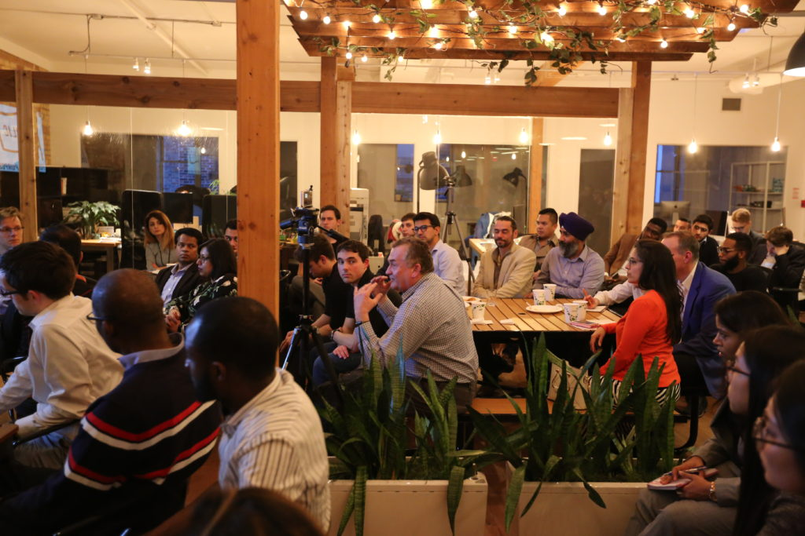
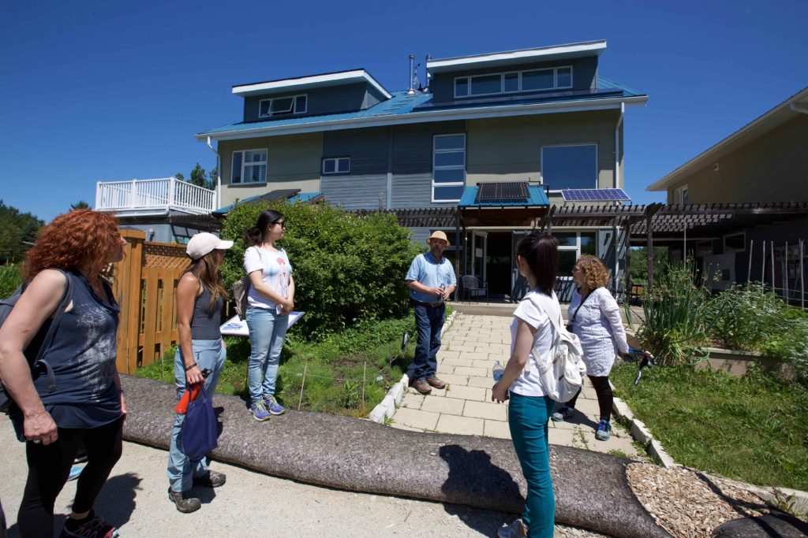

About RESET Canada
I am co-founder and the Vice President of RESET Canada. RESET Canada is an environmental non-for-profit organization based in Toronto. Our vision is to create a sustainable future. We create educational social events and activities to engage local communities, with a strong focus on renewable energy. Our signature event format includes speaker events, walking tours and hands-on workshops.




